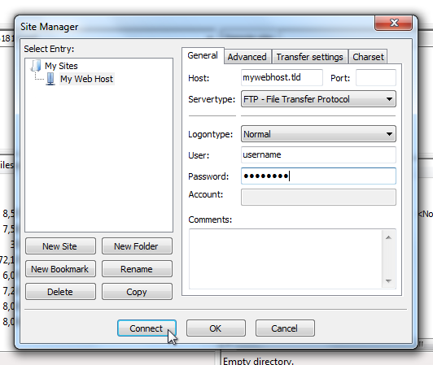
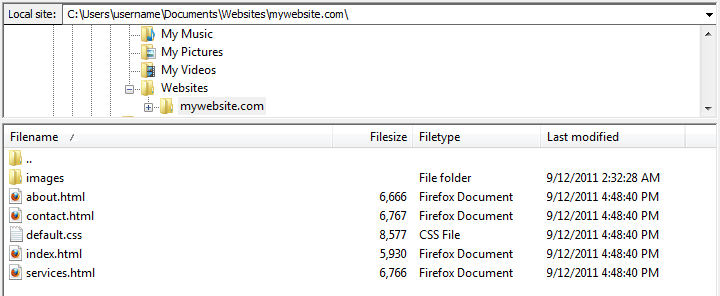
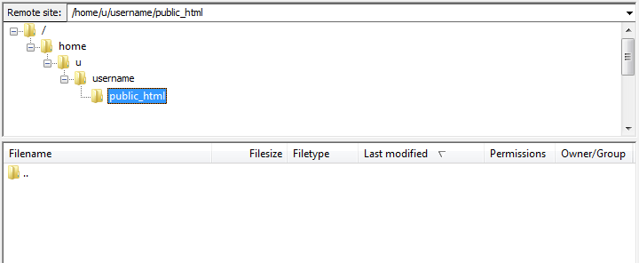
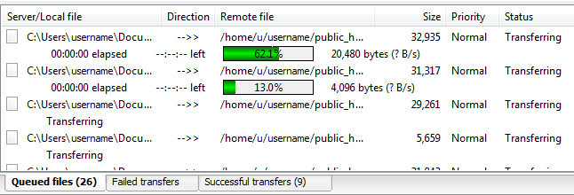
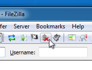

Thank you for purchasing my theme. If you have any questions that are beyond the scope of this help file, please feel free to email via my user page contact form here. Thanks so much!
To install the template to your hosting server you need to upload the template files using the FTP Manager. You can use your hosting control panel file manager or some third party FTP manager like FileZilla, CuteFTP etc.
Unzip the template folder. You can see the following files structure:
All html files are in the main folder. These files are where all your content will be.
All css files are in css folder. CSS is simply a way to take text, images, and other elements and change the look of them.
All javascript files are in js folder. JavaScript is a popular programming language that's built into all the major web browsers and used to make web pages interactive. If you don't have enough javascript knowledge I suggest you to not edit any of the javascript files. To learn more about plugin options, please visit the official plugin pages. You can find their links on the following Javascript section.
There is only one php file (processform) in the main folder. It is used for contact form. It will work only on a server. You should change only e-mail field. Please look at the following sections for more information.
All font files are in fonts folder. For more information please look at the "how to change fonts" section.
Most of the images are in images folder. You can find other images which are used by some plugins in css folder.
Start Filezilla and go to File > Site Manager.
Click on New Site and enter the FTP account details provided by your web host. Once you're done, click Connect (the new site entry will be saved automatically).
Once connected, you'll see two panes: the left one (first image below) shows the files on your computer, and the right one (second image below) shows the files currently on the web server. Using the pane on the right, browse to the folder to which you want to upload your files.
 Using the left pane, select the files you want to upload and drag them over to the right pane. Filezilla will now begin uploading the files to your web host.
And that's it! If you're done uploading files, just click the disconnect icon to close the connection to the web server.
Here's a list of the stylesheet files I'm using with this template, you can find more information opening each file:
| File Name | Description |
|---|---|
style.css |
Contains all of the specific stylings for the template such as heights, widths, margins, paddings etc. |
flaticon.css |
Contains flat icon webfonts. You can create your own icon webfont pack at flaticon.com |
colors.css |
Contains all color stylings |
normalize.css |
HTML5 display definitions |
animate.css |
Contains CSS3 animations |
media.css |
Contains some definitions for responsive design |
contactform.css |
Used only in process.php file |
Caroufredsel.css |
Caroufredsel plugin stylings (Used only on index.html file) |
nerveslider.css |
Nerve Slider slider plugin stylings (Used only on index2.html file) |
owl.carousel.css |
Owl Carousel plugin stylings |
lightgallery.css |
Lightgallery plugin stylings |
If you want to change the fonts, you should edit following codes in style.css file.
You can use a standard font family like "times", "courier", "arial", etc. or you can use Google web fonts. For more information click here...
All colors are in colors.css file. If you want to change any color which is using in the template, you should change color code of the element.
There are two type of html color code. HEX and rgba. I used rgba colors to create semi transparent colors.
Please look at the following links to learn more about html color codes;
Here's a list of the javascript files I'm using with this template, you can find more information at plugin official web sites:
| Tag | Description |
|---|---|
jquery-1.11.1.min.js |
jQuery is a Javascript library that greatly reduces the amount of code that you must write. |
nerveslider.min.js |
jQuery slider plugin |
jquery-ui-custom.min.js |
Required for only Nerve Slider plugin |
backstretch.min.js |
Jquery responsive background image plugin |
accordion.js |
Accordion script |
custom.js |
Contains custom scripts |
googlemap.js |
Contains custom Google Map script |
easyResponsiveTabs.js |
Jquery tab plugin |
jflickrfeed.min.js |
Flickr Feed Plugin |
owl.carousel.min.js |
Jquery Carousel plugin |
lightGallery.js |
jQuery Gallery plugin. |
If you want to change the Recipient E-mail, open up the processform.php file and change the following code:
After this change, if your contact form still doesn't works, try to add different email addresses. If problem still persists contact your hosting provider. There should be a server issue...
define( "RECIPIENT_NAME", "YOUR NAME" ); define( "RECIPIENT_EMAIL", "YOUR MAIL" );
define( "RECIPIENT_NAME", "egemenerd" ); define( "RECIPIENT_EMAIL", "yourmail@mail.com" );
To change the Flickr id, open up the jflickrfeed.min.js file and change the following id with your id:
id: '52617155@N08'
If you want to change other plugin's options (Slider,carousel etc.) please visit plugin official pages to learn how to do this. You can find the links on the following credits section.
I've used the following scripts and other files as listed.
Once again, thank you so much for purchasing this theme. As I said at the beginning, I'd be glad to help you if you have any questions relating to this theme. No guarantees, but I'll do my best to assist. If you have a more general question relating to the themes on ThemeForest, you might consider visiting the forums and asking your question in the "Item Discussion" section.